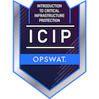
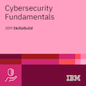
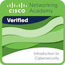

ABOUT
A dedicated and enthusiastic Computer Science and Engineering student specializing in Cyber Security at Parul University, I am passionate about protecting digital landscapes. With hands-on experience in penetration testing, networking security, and real-time malware detection, I enjoy tackling complex challenges. Proficient in Python, Java, C, and SQL, I’ve developed innovative security tools using frameworks like Nmap and Metasploit. My active participation in Capture The Flag (CTF) competitions sharpens my analytical skills and teamwork.
EDUCATION
B.Tech CSE specilization in Cyber Security
Parul University,Vadodara
2022-2026
Intermediate-PCM
Sri Sarswathi JR college,Ongole
2020-2022
High School
Sri Rama Krishna E.M High School,Ongole
2010-2020
WORK EXPERIENCE
- Developed a tool for encryption and decryption using the Caesar cipher technique..
- Created an image encryption and decryption tool using pixel manipulation techniques.
- Built a tool to assess the complexity and strength of passwords.
- Implemented a logging mechanism to track and record events or activities.
- Created a tool to capture and analyze network packets for security monitoring.
CERTIFICATIONS
- Certificate of Achievement for C3SA Premium Edition, awarded by Cyber War Labs.
- Certificate of Merit for second place in a CTF competition at a hackers meetup at Parul University.
- Certificate of Completion of Course "CYBER FORENSIC AND ETHICAL HACKING", CYFOEDU.
- Certificate of Training: 8-week Ethical Hacking Training, Internshala trainings.
- Certificate of Completion of Course "Ethical Hacking Essentials", EC-Council.
- Certificate of Completion of Course "Introduction to Python", Security Blue Team.
- Certificate of Completion: Introduction to OSINT, Security Blue Team.
- AWS Cloud Practitioner Essentials, AWS Training and Certification.
- Kali Linux Certification, Chegg.
- Certificate from Skill India | NSDC: Ethical Hacking Course with Grade B, Scholiverse Educare Pvt Ltd.
- Certificate of Participation: Hands-on Cybersecurity Workshop and CTF, Cyber Unbound.
-
opswat-introduction-to-critical-infrastructure-protection-icip by OPSWAT

-
cybersecurity-fundamentals By IBM

-
introduction-to-cybersecurity by Cisco
